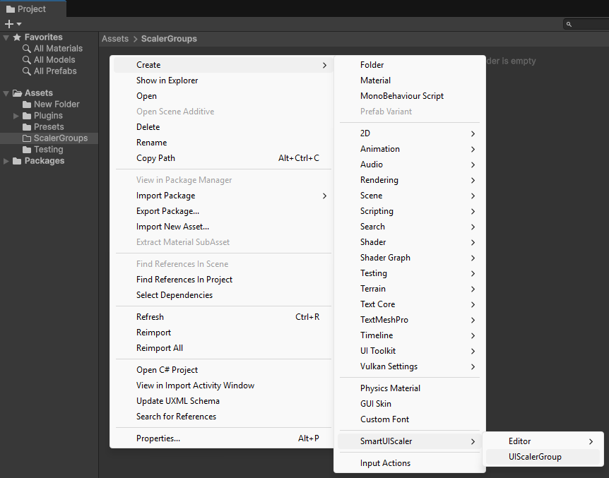
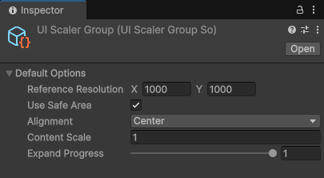
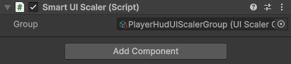
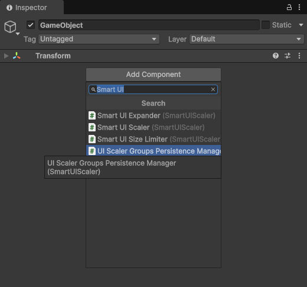

UI Scaler groups
UI Scaler Groups are used to share and control UI Scaler options between UI Scalers. UI Scaler Groups are controlled through their scriptable objects. To create a UI Scaler Group scriptable object Right Click on Project Window then navigate to "SmartUIScaler" > "UIScalerGroup".

UI Scaler Group scriptable object has the "Default Options" dropdown fields that can be changed in the inspector. As the name suggests, these options are used initially. Once they are changed through UI Scaler Group scriptable object scripting API they will be overwritten.

To assign a Smart UI Scaler to this group drag UI Scaler Group scriptable object into Smart UI Scaler "Group" field. Smart UI Scaler "Options" field will disappear as these options will no longer be used.

UI Scaler Group options can be changed through scripting API using the UI Scaler Group scriptable object reference (UIScalerGroupSo API). Once the options are changed - all active UI Scalers will automatically update. Check out the Demo 2 inside the plugin, where a complete UI Scaler Group example is showcased.
Initially UI Scaler Group options are not saved and loaded. To have persistent UI Scaler Group options the easiest way is to use UI Scaler Groups Persistence Manager component. Just add this component to an empty GameObject in the first scene in your project. It works by saving the options into PlayerPrefs when the game is closed and loads these options when this component awakes.

For more advanced scenarios a custom saving and loading can be implemented through UIScalerGroups class GetSaveData() and SetSaveData(UIScalerGroupsSaveData) static methods.